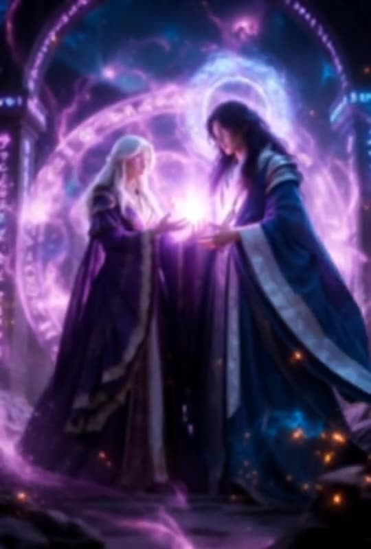

Image IAAI imageImagen IAAtelier phareFlagship workshopTaller principal10 à 14 ansAges 10 to 14De 10 a 14 años
Donne vie à ton personnageBring your character to lifeDale vida a tu personaje
Chaque équipe invente un personnage original, lui donne une personnalité et une identité visuelle, puis le met en scène.Each team invents an original character, gives it a personality and a visual identity, then puts it in a scene.Cada equipo inventa un personaje original, le da una personalidad y una identidad visual, y luego lo pone en escena.
Ce que le groupe créeWhat the group makesLo que crea el grupo
- Une fiche d'identité du personnageA character identity sheetUna ficha de identidad del personaje
- Son portrait visuel, dirigé par l'équipeIts visual portrait, directed by the teamSu retrato visual, dirigido por el equipo
- Une scène en storyboardA storyboarded sceneUna escena en storyboard
- Une galerie de classe et une bande-annonce communeA class gallery and a shared trailerUna galería de la clase y un tráiler común